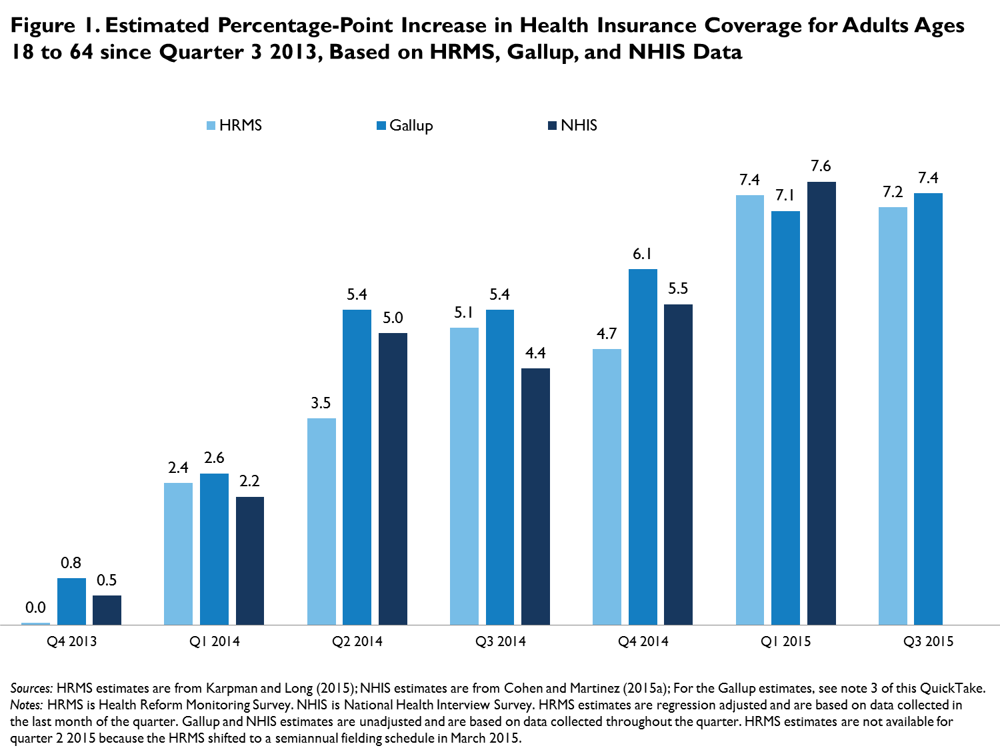

QuickTake: HRMS Benchmarks Well against Gallup-Healthways and NHIS on Changes in Health Insurance Coverage between 2013 and 2015
Michael Karpman and Sharon K. LongDecember 2, 2015
Key provisions of the Affordable Care Act (ACA) implemented in early 2014 sparked growing interest in data that could be used to monitor trends in health insurance coverage under the law. Though federal surveys have been tracking coverage for years, the time lag between data collection and reporting meant little information from these surveys was available in the immediate aftermath of the ACA’s major coverage expansions. Surveys conducted by private research organizations, including the Commonwealth Fund, Gallup, RAND, and the Urban Institute, have played an important role in filling this data gap with timely information (Karpman, Long, and Huntress 2015), supplementing federal surveys that have stronger designs, higher response rates, and, in most cases, larger sample sizes.
Three surveys—one federal, two nonfederal—have provided quarterly estimates of the changes in coverage for nonelderly adults (ages 18 to 64) since quarter 3 2013, just before the first health insurance Marketplace open enrollment period and several months before most state Medicaid expansions took effect. These include early release estimates from the National Health Interview Survey (NHIS) sponsored by the National Center for Health Statistics at the Centers for Disease Control and Prevention; the Health Reform Monitoring Survey (HRMS), launched in early 2013 by the Urban Institute; and the Gallup-Healthways Well-Being Index, launched in 2008.  As shown in figure 1, HRMS, Gallup’s survey, and NHIS show similar coverage gains for nonelderly adults between quarter 3 2013 and subsequent quarters in 2014 and quarter 1 2015.1 As of quarter 1 2015, for instance, estimated gains in coverage relative to quarter 3 2013 were 7.4 percentage points according to HRMS,2 7.1 percentage points according to Gallup’s survey, and 7.6 percentage points according to NHIS (Cohen and Martinez 2015a; Karpman and Long 2015).3 Extrapolating these estimates to the projected national population of nonelderly adults in 2015, these surveys suggest that between 14.2 million and 15.2 million adults had gained coverage as of March 2015.4 Both the Gallup and NHIS estimates are within the 95 percent confidence interval of the HRMS estimate of the percentage-point change in coverage (5.8, 8.9).
Estimates of the change in coverage between quarter 3 2013 and quarter 3 2015 have also been released for both HRMS and Gallup’s survey, offering the most recent estimates of coverage gains: an estimated 7.2 percentage-point gain during this period in the HRMS and a 7.4 percentage-point gain in Gallup’s survey. These results suggest that between 14.3 million and 14.8 million adults had gained coverage as of quarter 3 2015.5
The designs of the HRMS, Gallup, and NHIS surveys have several differences that may explain some of the variation in estimates. For instance, the HRMS is fielded during the last month of each quarter.6 In contrast, the NHIS and Gallup surveys are fielded continuously over all three months of a quarter. Therefore, estimates from the quarter 1 2015 round of the HRMS, which was fielded in March 2015, fully capture any coverage gains that occurred during the second open enrollment period; the NHIS and Gallup surveys, fielded from January through March 2015, capture only a portion of those gains.
The surveys also represent three different modes of data collection: Gallup’s survey uses computer-assisted telephone interviewing;7 HRMS uses a self-administered online survey in which respondents are drawn from a probability-based Internet panel; and NHIS uses computer-assisted personal interviewing.8 In addition, the surveys draw on different sampling frames for sample selection and recruitment. Gallup uses a dual-frame random-digit dialing method to select daily samples of respondents with cell phones and landline phones.9 Members of the Internet panel underlying the HRMS—the KnowledgePanel, maintained by GfK Custom Research—are recruited from an address-based sampling frame covering approximately 97 percent of US households (GfK 2013). Households interviewed for the NHIS are selected using a multistage area probability design that involves dividing the country into primary sampling units (PSUs) and drawing a sample of PSUs, selecting segments within those PSUs containing a small number of addresses based on geography or lists of building permits, and interviewing households in those segments.10 The respondents for all three surveys, however, are weighted to be representative of the overall US population.
Questions about health insurance coverage also differ across the surveys. For instance, drawing on a question from the American Community Survey, HRMS asks respondents if they are covered by any of several types of health insurance. Those reporting nonspecified coverage have an option to submit a verbatim response on their type of coverage. In contrast, the NHIS and Gallup’s survey first ask respondents if they have coverage and then follow up with questions on the type of coverage. Unlike Gallup’s survey, both HRMS and NHIS contain a question to verify that those who do not report having coverage are uninsured. NHIS also includes a question to verify whether nonelderly respondents (or the family members on whose behalf they are reporting) with no reported coverage type are covered by Medicaid.
Despite these differences in design, the similar patterns across the surveys suggest that nonfederal surveys using traditional random-digit dialing methods or cutting-edge Internet-based methods can provide timely and reliable information on changes in the health insurance landscape during periods of rapid policy change. These surveys can serve as valuable sources of information to supplement federal survey data that provide more definitive estimates of the coverage changes occurring under the ACA.
References
Carman, Katherine G., Christine Eibner, and Susan M. Paddock. 2015. “Trends in Health Insurance Enrollment, 2013-15.” Health Affairs 34 (6): 1044–48.
Cohen, Robin A., and Michael E. Martinez. 2015a. Health Insurance Coverage: Early Release of Quarterly Estimates from the National Health Interview Survey, January 2010–March 2015. Hyattsville, MD: National Center for Health Statistics.
Cohen, Robin A., and Michael E. Martinez. 2015b. Health Insurance Coverage: Early Release of Quarterly Estimates from the National Health Interview Survey: January 2010-June 2015. Hyattsville, MD: National Center for Health Statistics.
Collins, Sara R., Petra W. Rasmussen, Michelle M. Doty, and Sophie Beutel. 2015. Americans’ Experience with Marketplace and Medicaid Coverage. New York: Commonwealth Fund.
GfK. 2013. KnowledgePanel Design Summary. Palo Alto, CA: GfK.
Karpman, Michael, Sharon K. Long, and Michael Huntress. 2015. Nonfederal Surveys Fill a Gap in Data on ACA. Washington, DC: Urban Institute.
Karpman, Michael, and Sharon K. Long. 2015. QuickTake: Taking Stock: Gains in Health Insurance Coverage under the ACA Continue as of September 2015, but Many Remain Uninsured. Washington, DC: Urban Institute.
National Center for Health Statistics, US Census Bureau. 2015. Comparison of the Prevalence of Uninsured Persons from the National Health Interview Survey and the Current Population Survey, 2014 and 2015. Hyattsville, MD: US Department of Health and Human Services, Centers for Disease Control and Prevention, National Center for Health Statistics.
State Health Access Data Assistance Center. 2013. Comparing Federal Government Surveys that Count the Uninsured. Princeton, NJ: Robert Wood Johnson Foundation.
Notes 1 We focus on changes in coverage because estimates of the level of coverage often vary across surveys because of differences in survey design (State Health Access Data Assistance Center 2013). 2 In addition to using survey weights, we use regression adjustment to control for differences in the demographic and socioeconomic characteristics of the respondents across the different rounds of the HRMS. We control for the variables used in the poststratification weighting of the KnowledgePanel and the poststratification weighting of HRMS. These variables are sex, age, race and ethnicity, language, education, marital status, whether any children are present in the household, household income, family income as a percentage of FPL, homeownership status, Internet access, urban or rural status, and census region. We also control for citizenship status and participation in the previous quarter’s survey (i.e., whether the respondent completed the survey in the previous quarter, was sampled in the previous quarter but did not complete the survey, or was not sampled in the previous quarter). 3 Gallup estimates for quarter 4 2013 through quarter 4 2014 are from Jenna Levy, “In U.S., Uninsured Rate Sinks to 12.9%,” Gallup, January 7, 2015. The Gallup estimate for quarter 1 2015 is from Jenna Levy, “In U.S., Uninsured Rate Dips to 11.9% in First Quarter.” Gallup, April 13, 2015. The Gallup estimate for quarter 3 2015 is from Stephanie Marken, “U.S. Uninsured Rate at 11.6% in Third Quarter,” Gallup, October 8, 2015. The Gallup estimate for quarter 3 2013 was provided by the US Department of Health and Human Services, Office of the Assistant Secretary of Planning and Evaluation (Karpman, Long, and Huntress 2015). 4 The projected size of the 2015 nonelderly adult population is from US Census Bureau population projections by race, ethnicity, and sex of all ages from 2014 to 2060 based on estimated birth rates, death rates, and net migration rates. Using the “Table 1” file (which has a 2015 projected population of 321,368,864), we summed the 2015 population projections for all 18-to-64-year-olds to arrive at 199,903,264 nonelderly adults in 2015. See US Census Bureau, “2014 National Population Projections: Downloadable Files,” US Department of Commerce, last modified December 10, 2014. 5 NHIS estimates have been released for quarter 2 2015 and show an estimated 8.2 percentage-point gain in coverage since quarter 3 2013, which would translate to an estimated 16.4 million nonelderly adults gaining coverage between quarter 3 2013 and quarter 2 2015 (Cohen and Martinez 2015b). 6 Beginning in March 2015, the HRMS was shifted to a semiannual schedule. 7 “How Does the Gallup-Healthways Well-Being Index Methodology Work?” Gallup, accessed June 24, 2015. 8 “About the National Health Interview Survey,” National Center for Health Statistics, accessed June 24, 2015. 9 “How Does the Gallup-Healthways Well-Being Index Methodology Work?” Gallup, accessed June 24, 2015. 10 “About the National Health Interview Survey,” National Center for Health Statistics, accessed June 24, 2015.
|

 |
 |
 |